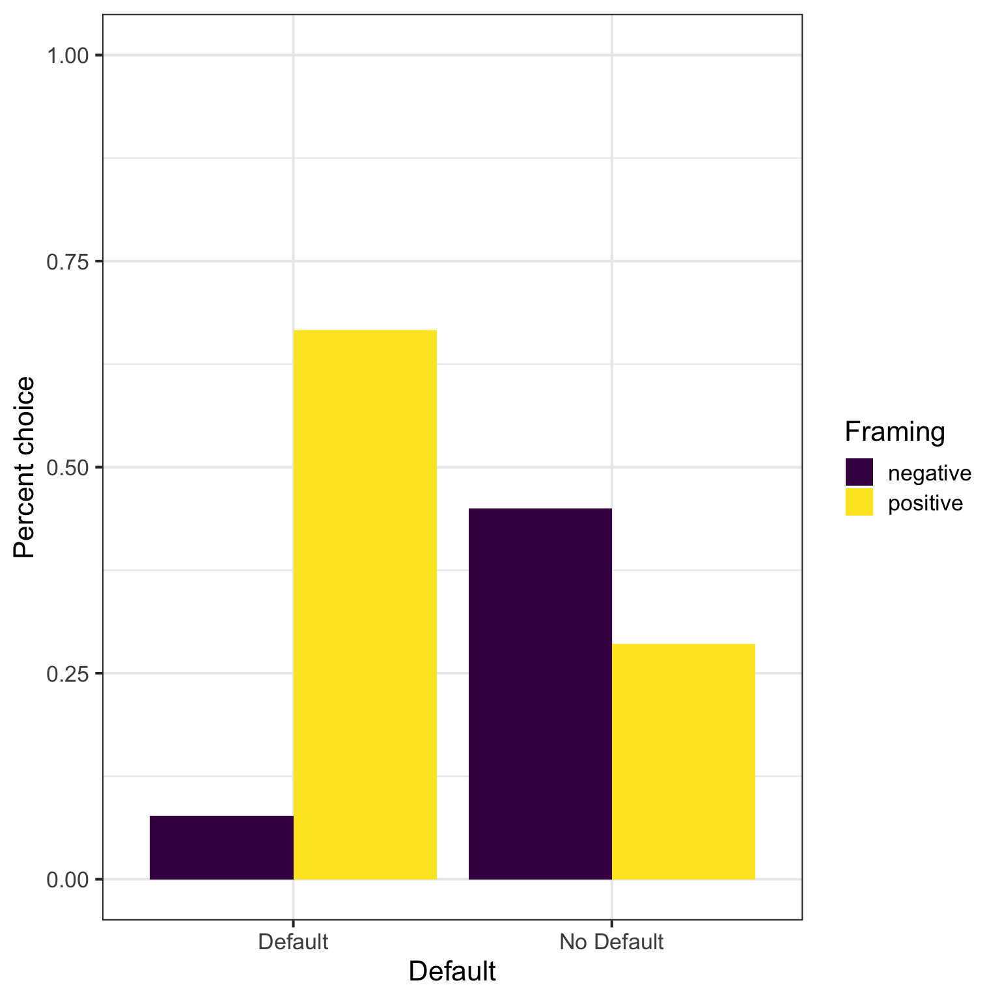
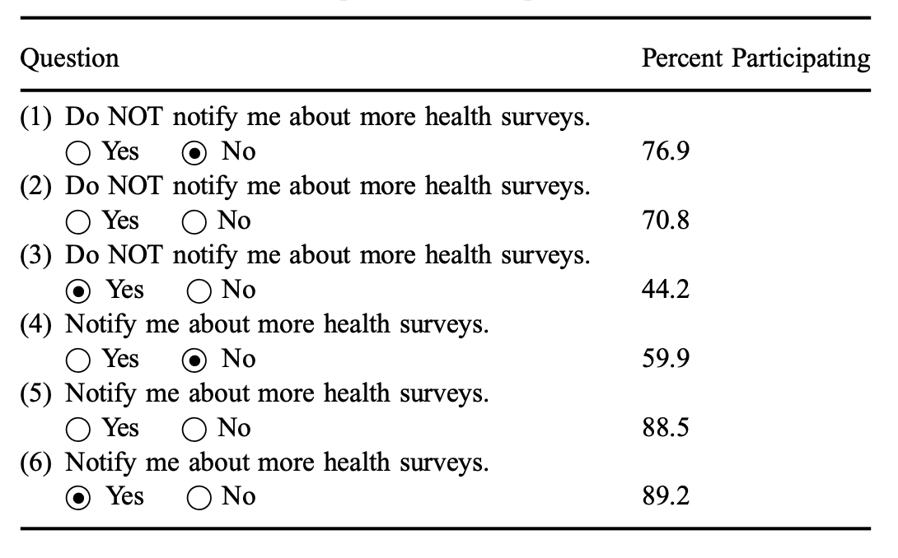
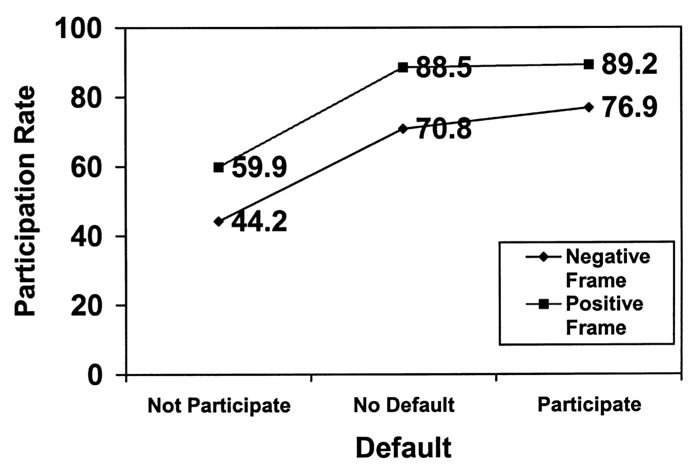
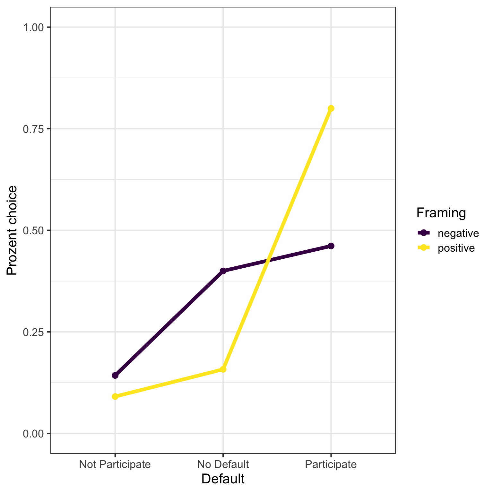

| agegroup | frequency |
|---|---|
| 18 - 24 | 113 |
| 25 - 34 | 20 |
| 35 - 44 | 4 |
| 45 - 54 | 19 |
| 55 - 64 | 10 |
| 65 or older | 4 |
Original work
Johnson, E. J., Bellman, S., & Lohse, G. L. (2002). Defaults, framing and privacy: Why opting in-opting out.
Team Bachelor Spring 2023
- Marina Burger
- Mike Gafner
- Fiona Laski
- Naveen Karunanithy
- Lazar Knezevic
- Salome Kurt
- Diego Roth
- Sai-Rathika Sriranjan
- Yves Schmidt
- Anja Studer
- Jenny Vay
Abstract
Differences in opt-in and opt-out responses are an important element of the current public debate concerning on-line privacy and more generally for permission marketing. We explored the issue empirically. Using two on-line experiments we show that the default has a major role in determining revealed preferences for further contact with a Web site. We then explore the origins of these differences showing that both framing and defaults have separate and additive effects in affecting the construction of preferences.
Replication
We ran a direct replication of Experiment 1 and 2 of Johnson et al. (2002). The questions on receiving an additional survey at the end were included in an unrelated questionnaire on autonomous driving (~ 10 minutes). The 10 questions (experiment 1: 4; experiment 2: 6) were pooled and randomly shown to the participants at the end of the driving questionnaire.
Demographics
The original paper had 277 participants in experiment 1 and 234 participants in experiment 2. We aimed at a similar sample had a great start with 408 participants. Unfortunately more than 35% dropped out on the first page of the questionnaire. Our working hypothesis is, that most of our participants did the experiment on their mobile - our questionnaire was checked for that but apparently we missed that the handling was not ideal … hence the large dropout.
Overall we ended up with 170 participants (49.41% female). Age was recorded in age brackets:
Experiment 1
Johnson et al. (2002) used four questions to evaluate the presence of a default (no default in question 1 and 2 (listed both as 1 in the original) and two questions (!3 and Q4) with a pre-set default selection) and crossed these with framing (positive (Q1, Q3) and negative (Q2, Q4)). Putting the results in a rank order (see Figure 1) we are getting the highest participation rate in Q2 (no default, negative) followed by Q3 (default, positive), Q4 (default, negative) and the lowest in Q1 (no default, positive)) - so we are looking for the sequence 2341.

Our results show the pattern 3214 as can be seen in Figure 2. Noteworthy seems that Q4 (default, negative) was de-selected in most cases which is surprising and different to the original.

Running the logistic regression predicting choice with framing X default (see Table 1) shows a framing effect as well as an effect for the default condition (of course in the opposite direction). The interaction term is also significant.
| choice | |||
|---|---|---|---|
| Predictors | Odds Ratios | CI | p |
| (Intercept) | 0.08 | 0.01 – 0.28 | 0.001 |
| Framing [FP] | 24.00 | 3.78 – 232.46 | 0.002 |
| Default condition [ND] | 9.82 | 2.11 – 71.95 | 0.008 |
| Framing [FP] × Default condition [ND] |
0.02 | 0.00 – 0.20 | 0.001 |
| Observations | 76 | ||
| R2 Tjur | 0.184 | ||
Experiment 2
In experiment 2 Johnson et al. (2002) modify the questions (see Figure 3) in adding a Yes/No option (instead the simple tick box in Experiment 1) and an empty version where no boxes are ticked. Inspecting the results the rank order is now 651243.

There is a clear framing effect and a step wise default effect (see Figure 4).

There several differences inspecting our results. Our rank ordered results give us the pattern: 612534. Remarkable are also the much lower participation rates (below 50%) for Not participate and No Default in both framing conditions. Only Participate in the positive frame is above 75% (see Figure 5).

Running the logistic regression predicting choice with framing X default X answer option (see Table 2) shows a significant framing effect as well as an effect for the the presence of an answer option (Y/N). The two-way interaction terms for framing and default is significant. There is also a three-way-interaction of framing, default and answer option mainly driven by the difference between participate and no-default.
| choice | |||
|---|---|---|---|
| Predictors | Odds Ratios | CI | p |
| (Intercept) | 1.20 | 0.36 – 4.16 | 0.763 |
| Framing [FP] | 8.33 | 1.42 – 69.92 | 0.027 |
| Default condition [DP] | 0.97 | 0.19 – 4.96 | 0.973 |
| Default condition [ND] | 1.25 | 0.25 – 6.18 | 0.781 |
| Answer Option [Y] | 0.08 | 0.00 – 0.67 | 0.040 |
| Framing [FP] × Default condition [DP] |
0.03 | 0.00 – 0.29 | 0.004 |
| Framing [FP] × Default condition [ND] |
0.43 | 0.03 – 5.01 | 0.499 |
| Framing [FP] × Answer Option [Y] |
0.12 | 0.01 – 4.10 | 0.186 |
| Default condition [DP] × Answer Option [Y] |
8.82 | 0.63 – 255.72 | 0.132 |
| Default condition [ND] × Answer Option [Y] |
5.33 | 0.40 – 149.91 | 0.239 |
| (Framing [FP] × Default condition [DP]) × Answer Option [Y] |
181.48 | 2.90 – 9602.29 | 0.009 |
| (Framing [FP] × Default condition [ND]) × Answer Option [Y] |
0.66 | 0.01 – 31.07 | 0.833 |
| Observations | 190 | ||
| R2 Tjur | 0.351 | ||
Caveats
The obvious problem with this data set (and the replication) is the small
References
Johnson, E. J., Bellman, S., & Lohse, G. L. (2002). Defaults, framing and privacy: Why opting in-opting out. Marketing letters, 13, 5-15.